Plot comparison:
ATLAS and Madgraph samples
- Madgraph generated sample
- Generation comparisons underway
- $ 2\ell SS $ case


19 - 05 - 2021
Madgraph generated sample
- The $ttH$ sample we are using was done with MadGraph5_aMC@NLO with Delphes to simulate the detector.
- Focus on generation: $H\to\tau^+\tau^-,\;H\to W^+W^-$.
- Current generation with 140000 events with the following decay list:
- $H\to\tau^+\tau^-$,
- $H\to W^+W^-\to \ell^+ \ell^- \nu_{\ell} \bar{\nu}_{\ell}$,
- $H\to W^+W^-\to \ell^+ \nu_{\ell}\; j\; j $,
- $H\to W^+W^-\to \ell^- \bar{\nu}_{\ell}\; j\; j $.
Checking the yield against the ATLAS one.
Yield comparison between the MG/Delphes generated samples and the Atlas samples
- The normalization used for the sample has been checked using the information from the PDG and $H, W$ branching ratio.
- We have tried to mimic the ATLAS sample cuts to understand if it was feasible to obtain comparable yields and distribution from our generation, the current list of cuts is shown in the next slide.
Current comparison between ATLAS sample with all the cuts applied and our sample with the one shown below:
| Channel | ATLAS yields 139 $fb^{-1}$ | MADGRAPH yields 139 $fb^{-1}$ |
| $3\ell$ | $91.857$ | $\sim 63$ -30%? (UNCHECKED) |
| $2\ell$SS | $181.457$ | $\sim 140$ -30%? |
Cuts now applied $2\ell SS$ on the Madgraph generation:
- pass trigger selection
- Leptons pt above 20 GeV
- Two lepton event
- Same sign leptons
- At least 1 Bjets
- At least 4 Jets
- No Tau hadronic decays
Cutflow results:
| All | PassTrigger | 2LSSCheck | 2LeptonEvent | OneBJet | FourJet | NoTauHadronDecay |
| $13415$ | $1014$ | $351$ | $255$ | $216$ | $178$ | $140$ |
Comparison $2\ell SS$ at NoTauHadronDecay, normalized at the same area:
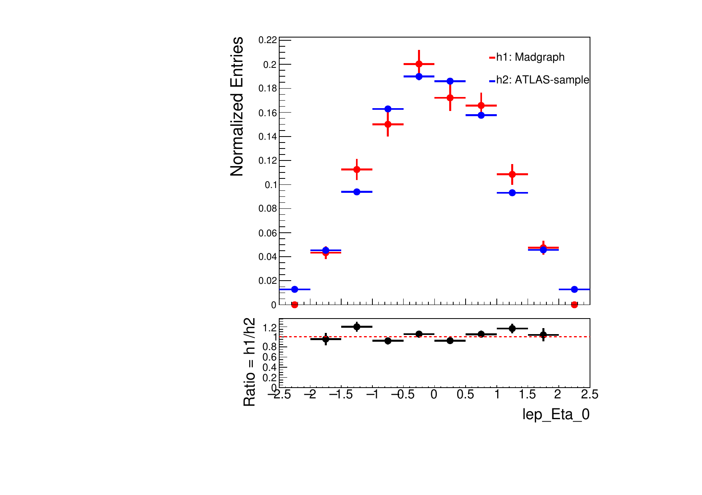
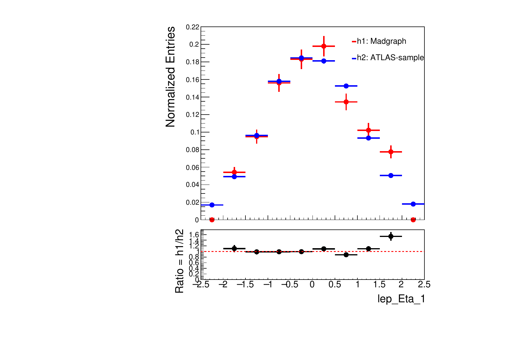
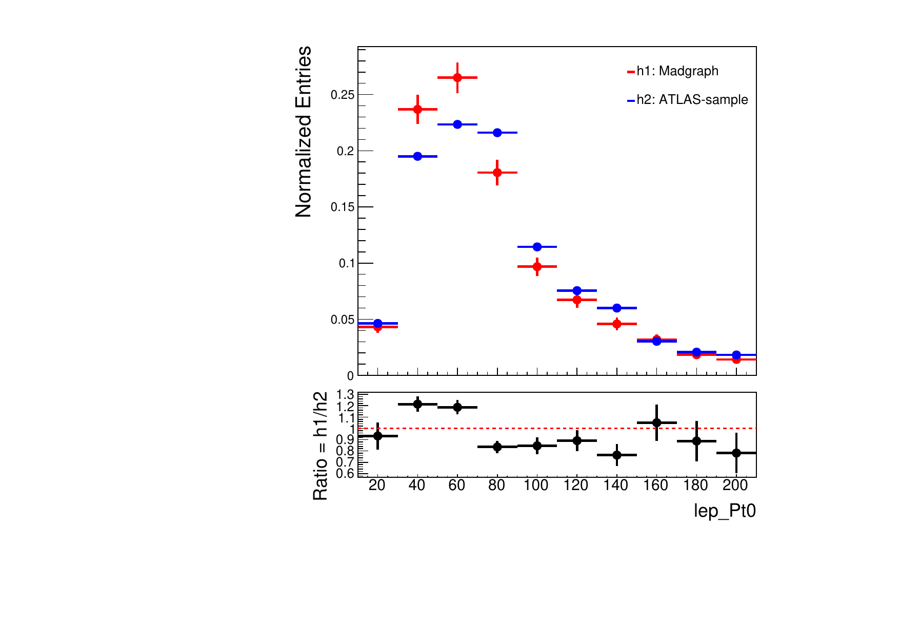
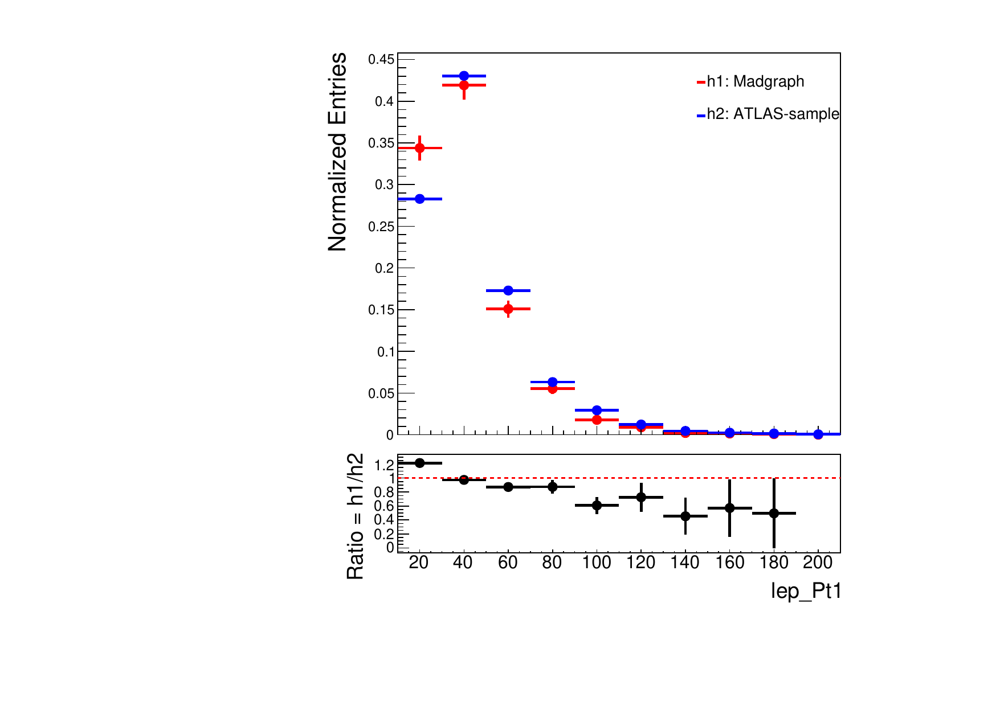
Comparison $2\ell SS$ at NoTauHadronDecay, normalized at the same area:
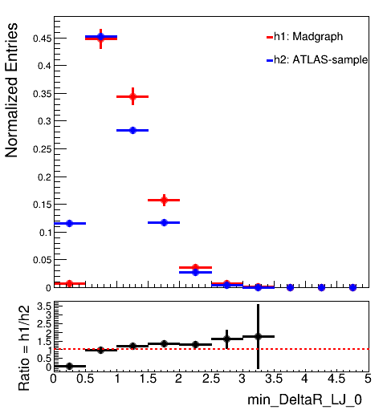
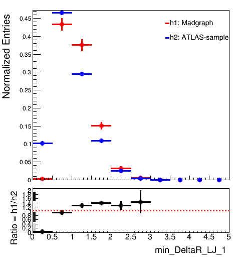
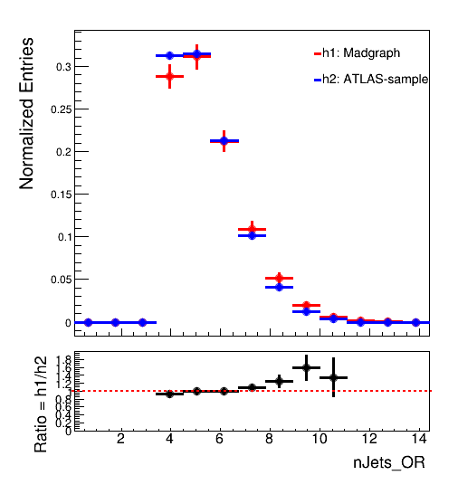
- Observed a discrepancy in the first bin.
- Decided to introduce a cut in the ATLAS sample to see outcome.
Comparison $2\ell SS$ at NoTauHadronDecay
Including DeltaR cut:
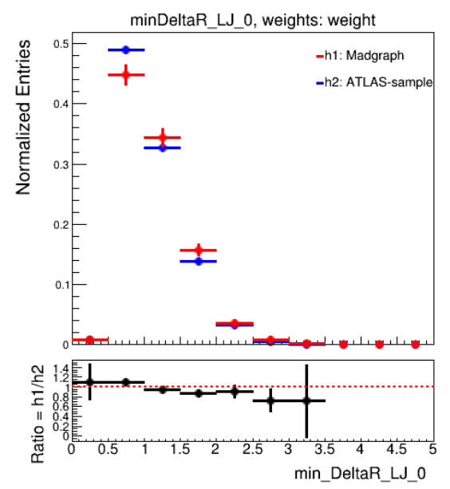
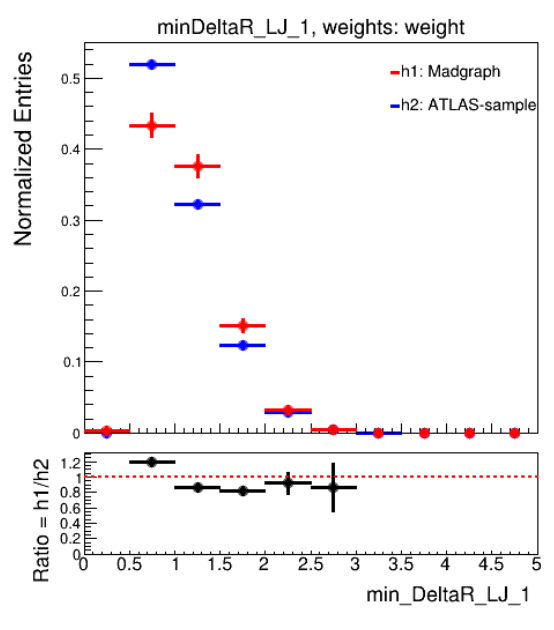
Resulted yield after the cut at 143 against 140 from our generation.
Comparison $2\ell SS$ at NoTauHadronDecay, including DeltaR cut:
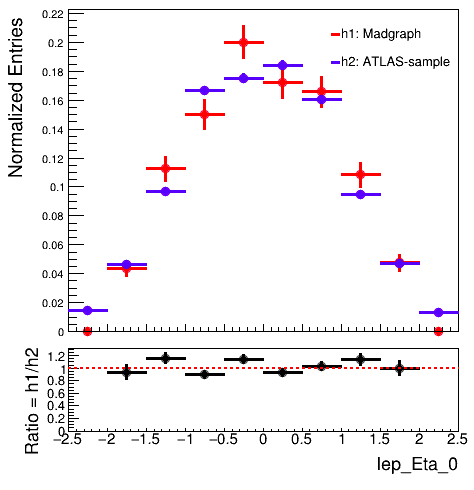
 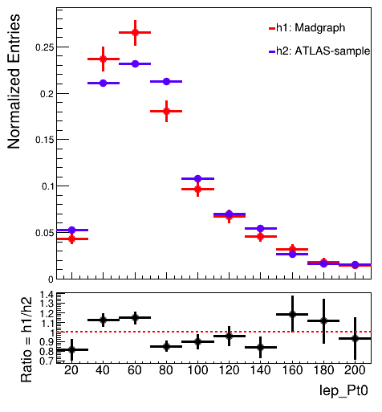
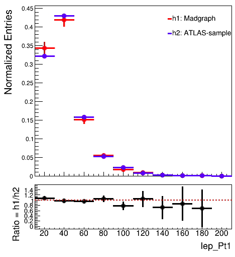
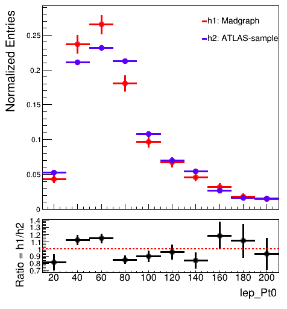
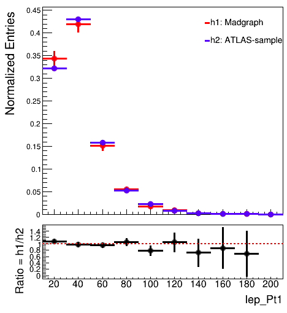
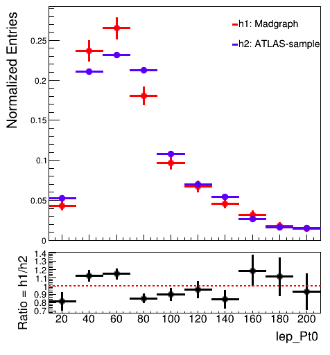
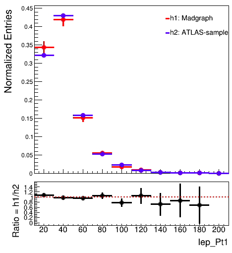
Thanks for your attention!
BACKUP
Comparison $2\ell SS$ at 2LSSPreselection:
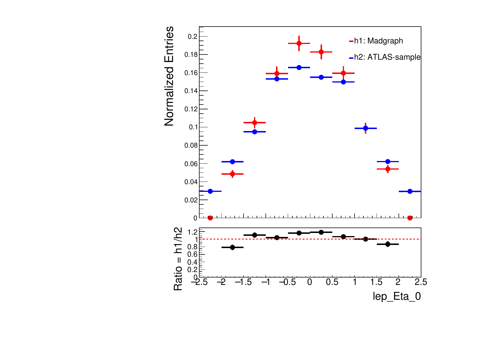
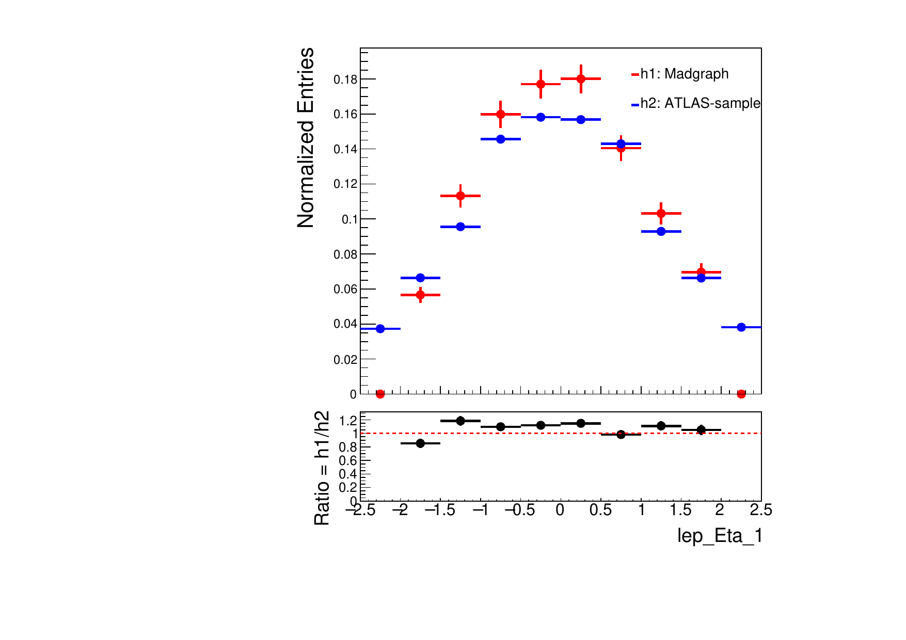
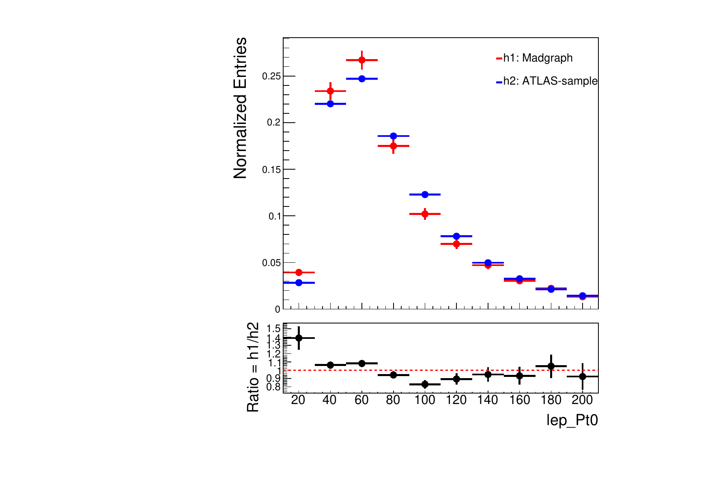
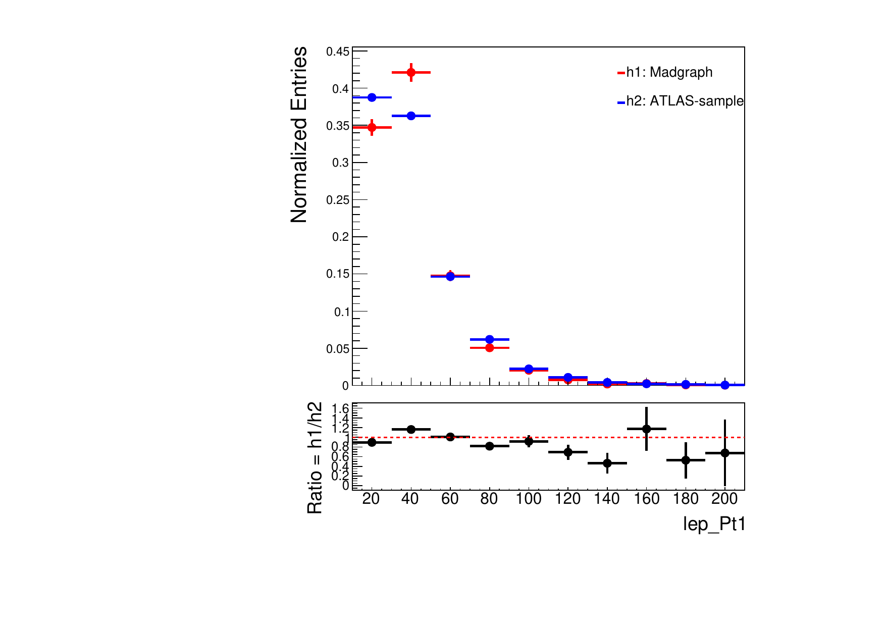
11 - 05 - 2021